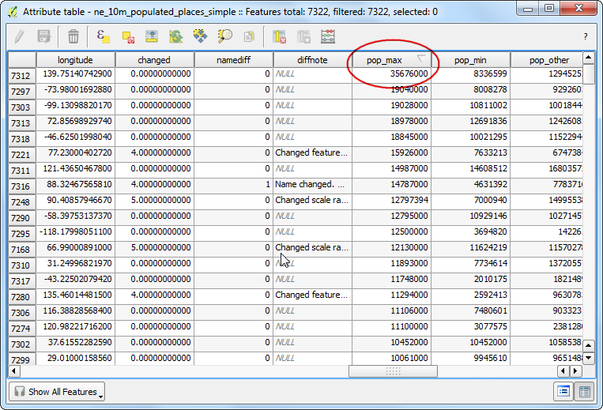

Робота з атрибутами
Дані ГІС складаються з двох частин - об’єктів і атрибутів. Атрибути це структуровані дані про кожен об’єкт. Цей урок показує як переглядати атрибути і виконувати базові запити про них в QGIS.
Огляд завдання
Набір даних для цього уроку містить інформацію про населені місця світу. Задача полягає в тому, що необхідно запросити і знайти всі столиці світу, які мають кількість населення більше ніж 1,000,000.
Додаткові навички
Вибір об’єктів шару за допомогою виразів.
Зняття виділення з об’єктів шару за допомогою панелі інструментів Attributes
Використання Query Builder для показу підмножини об’єктів шару.
Виконання
Після завантаження даних відкрийте QGIS. Перейдіть у меню Шар –> Додати шар –> Додати векторний шар.

Натисніть кнопку Browse і перейдіть до папки, в яку ви завантажили дані.

Знайдіть завантажений файл ne_10m_populated_places_simple.zip. Вам не потрібно розпаковувати zip архів. QGIS може відкривати zip файли напряму. Виберіть файл і натисніть Open.

Вибраний шар тепер буде завантажений у QGIS і ви побачите багато точок, які представляють собою населені місця світу.

Натисніть правою кнопкою миші на шар і виберіть Open Attribute Table.

Дослідіть різні атрибути та їх значення.

Нас цікавить кількість населення для кожного об’єкта, тому нас цікавить поле pop_max. Ви можете натиснути мишею двічі на заголовок поля для того, щоб відсортувати його в порядку зменшення.

Тепер ми готові здійснити запит по цим атрибутам. QGIS використовує SQL-подібні вирази для здійснення запитів. Натисніть Select features using an expression.

У вікні Select By Expression, розгорніть область Fields and Values і натисніть двічі на поле pop_max. Ви побачите, що воно було додане у область виразу в низу. Якщо ви не впевнені щодо значень полів, ви можете натиснути на Load all unique values, щоб побачити які значення атрибуту наявні в наборі даних. В цій вправі, ми хочемо знайти усі об’єкти, які мають населення більше ніж 1,000,000. Тому доповніть вираз як на прикладі нижче і натисніть кнопку Select.

Натисніть Close і поверніться до основного вікна QGIS. Ви помітите, що підмножина точок тепер показуються жовтим. Це результат нашого запиту і ви бачите всі місця із набору даних, які мають значення атрибуту pop_max більше ніж 1,000,000.

Задачею цього уроку знайти всі місця, що є столицями країн. Поле, яке містить цю інформацію називається adm0cap. Значення 1 вказує, що місто є столицею. Ви можете додати цей критерій вибору до нашого попереднього виразу додавши оператор and. Давайте оновимо наш запит, аби вибрати лише ті міста, що є столицями. Натисніть на кнопку Select feature using an expression в таблиці атрибутів і наберіть вираз як приведено нижче і натисніть Select, а потім Close.
"pop_max" > 1000000 and "adm0cap" = 1

Поверніться до головного вікна QGIS. Тепер ви побачите меншу підмножину вибраних точок. Це є результатом другого запиту, який показує нам всі місця із набору даних, які є столицями країн і мають населення більше ніж 1,000,000. Якщо ми хотіли здійснити якийсь подальший аналіз щодо цієї підмножини даних, ми можемо зробити вибір постійним. Правою кнопкою натисніть на шар ne_10m_populated_places_simple і виберіть Properties.

На вкладці General прокрутіть вниз до секції Feature subset section. Натисніть Click Query Builder.

Введіть той самий вираз, який ви вводили раніше і натисніть кнопку OK.
"pop_max" > 1000000 and "adm0cap" = 1

Після повернення до головного вікна QGIS, ви побачите що решта точок зникла. Ви тепер можете проводити будь-який інший аналіз щодо цього шару і будуть використані лише ті об’єкти що відповідають вашому вибору. Ви помітите, що точки досі показуються жовтим. Це тому що вони досі вибрані. Знайдіть кнопку Deselect Features from All Layers, використовуючи панель інструментів Attributes, і натисніть її.

Ви побачите, що з точок тепер зняте виділення і вони пофарбовані в свій початковий колір.